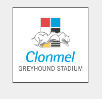
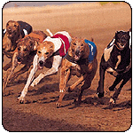

Greyhound Racing

A great night out
Whether you're a casual passer-by attracted by the roar of the crowd and the electricity in the air, or a corporate organiser looking for something to do, Clonmel Greyhound Stadium will supply everything you'll need to have a great night out.
They pride themselves on their ability to deliver an outstanding night's entertainment, making another night in the local pub or restaurant look just a little lacklustre by comparison.
And even if you're not normally a betting person, we assure you that the excitement and anticipation of participation will soon have you captivated.

We welcome everyone to the stadia, the serious dog-watcher, the after-work crowd looking for something better than a night in a smoky pub, the clubs after a comfortable and well-organised evening out, the corporate outings. Whatever your need, they will cover it.
Clonmel Greyhound Stadium is Ireland's oldest greyhound stadium. It will soon by undergoing a massive re-building program. Building a state of the art stand. The regular race nights are Sunday and Thursday Nights.
For more information you can telephone the track at:
(052)83334/83333
Admission Prices:
| Adult | OAP/Student | Child |
| €7.00 | €4.00 | - |